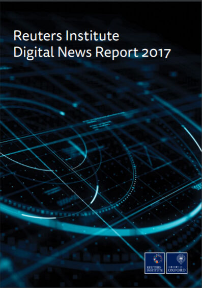
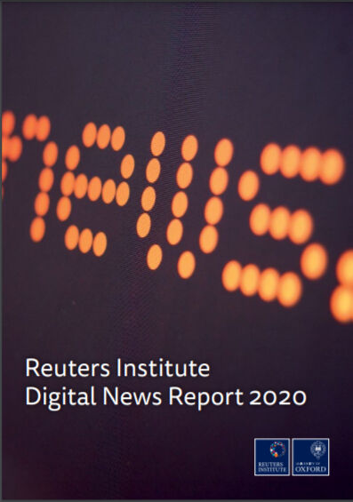

За полазнике
За тренере
За полазнике
За тренере
Модул 7: Глобални трендови конзумирања вести
Опис модула
Главни циљ овог модула је да пружи преглед глобалних трендова конзумирања вести како би се подигло разумевање о ставовима, навикама, дилемама и афинитетима публике и развијала свест о питањима везаним за вести и промене медијског окружења у различитим земљама, периодима, културама и демографским структурама.
Секундарни циљ је да усмери тренере који желе да користе садржај овог модула за обуку полазника. Разумевање трендова конзумирања вести такође помаже да се одаберу најефикаснија средства за борбу против мисинформација и дезинформација, као и да се развије најприкладнији садржај (који се фокусира на критична питања) за наставне планове и програме новинске писмености.
Поред ових циљева модулом су обухваћени преферирани извори вести, префериране приступне тачке, поверење у информативне медије, канали ширења и дилеме (недоумице) због мисинформација, афинитети према формату вести, утицај новинске писмености и смернице како предавати предмет.
Полазници који успешно заврше овај модул моћи ће да:
- разумеју глобалне трендове конзумирања вести
- разумеју ставове, навике и наклоности публике
- разумеју свесност публике за питања која се односе на вести и постојећих дилема
- разумеју променљиво медијско окружење по земљама, периодима, култури и демографским карактеристикама.
Поред тога, тренери који успешно заврше овај модул, моћи ће да разумеју потребу за изменом наставног садржаја у складу са карактеристикама циљних група, као и смерницама за обуку на ову тему.
Структура модула
Овај модул се састоји из следећих целина:
- Опис модула (циљеви, опис садржаја и исходи учења)
- Структура модула
- Смернице за полазнике
- Смернице за тренере (како се припремити, методе које треба користити и савети за тренере)
- Садржај (материјал за учење и вежбање)
- Квиз
- Референце (цитирани извори, препоручени извори и видео-записи)
Главни циљеви модула, опис садржаја и исходи учења објашњени су у делу Опис модула. Садржај обухвата све материјале неопходне за учење. Квиз укључује питања на која се одговара са тачно или нетачно како би полазници тестирали свој напредак. Одељак Референце обухвата списак извора цитираних у садржају модула и листу додатних извора и видео-записа који се топло препоручују за читање и гледање како би се проширило знање о овој теми. Смернице за полазнике укључују упутства и сугестије за полазнике. Смернице за тренере воде тренере кроз различите фазе обуке и дају савете који би могли да буду корисни током предавања предмета.
Смернице за полазнике
Од полазника се очекује да прочитају текст, пажљиво проуче дате примере, погледају препоручене видео-записе и ураде вежбања. Они могу да консултују предложене ресурсе за додатне информације. Након проучавања садржаја, полазницима се препоручује да ураде квиз како би проценили свој напредак. Уколико је потребно, могу поново проучити материјал за учење.
Смернице за тренере
Смернице за тренере укључују сугестије и савете о томе како да користе садржај овог модула за обуку полазника о глобалним трендовима конзумирања вести и променама медијског окружења у различитим земљама, временима, културама и демографским структурама (карактеристикама).
Припрема
Припремите презентацију (Пауерпоинт/Прези/Канва) са визуелним материјалима (слике и видео-записи) и чињеничним подацима. Заједно са глобалним подацима представите и податаке који су специфични за вашу државу.
Овај део садржаја захтева честа ажурирања. Узмите најновији годишњи извештај Ројтерса и унесите додатке и измене по потреби. Ако је ваша земља укључена у Ројтерсову извештај, укључите у своју презентацију детаље специфичне за вашу земљу, у супротном, покушајте да добијете резултате истраживања из других извора.
Почетак
Како бисте увели полазнике у тему, на почетку можете користити кратак квиз (3 до 5 питања) направљен у Кахуту или им поставити питања путем Ментиметар апликације. Поменути тест и питалице могу се користити као мотивационо средство и средство за проверу постојећег знања полазника о овој теми.
Методологија
Током обуке могу се комбиновати различите наставне методе:
- Предавања
- Дискусије
- Рад у групама
- Самопроцењивање
Савети за тренере
Загревање
Ефикасан начин укључивања полазника и утврђивања заједничких очекивања о томе шта ће научити јесте постављање неколико прелиминарних питања о овој теми. На пример, можете питати полазнике шта се променило у њиховом односу према вестима током последње деценије..
Након дискусије, уверите се да разумеју да се медијско окружење мења у различитим земљама, периодима, културама и демографским структурама.
Представљање циља лекције
Циљ лекције треба да буде јасан (подизање разумевања о ставовима, навикама, дилемама, свести и афинитетима публике и променама медијског окружења у различитим земљама, периодима, културама и демографским структурама). Након питања за загревање, лакше ћете разјаснити циљеве.
Представљање садржаја лекције
Приликом представљања садржаја, водите рачуна о интеракцији са полазницима и подстакните их на активно учешће.
- Пре него што дате преглед глобалних трендова конзумирања вести, замолите учеснике да изнесу своје виђење.
- Пре него што дате преглед промена медијског окружења у различитим земљама, периодима, културама и демографским структурама, замолите учеснике да изнесу своја запажања.
- Када представљате глобалне податке, наведите и податке који су специфични за вашу земљу и упоредите их.
- Када дате свеобухватан преглед глобалних медијских трендова, питајте учеснике колико је ово знање важно за развој наставног плана и програма за новинску писменост.
Закључак
Направите кратак резиме лекције и поставите неколико питања која ће вам помоћи да истакнете најважније поруке које желите да пренесете.
- Питајте полазнике да ли сазнања о променама у медијском окружењу повећавају њихову свест о питањима која се односе на вести
Након дискусије, уверите се да полазници разумеју да постоје бројне промене и фактори (време, земља и демографске карактеристике) који утичу на понашање појединаца приликом конзумирања вести и да је то драгоцена информација за обуку прилагођену циљним групама.
Садржај: Глобални трендови конзумирања вести
Увод
Познавање ставова, навика и понашања публике важно је како би се разумеле промене медијског окружења, разлике засноване на специфичностима државе и демографским карактеристикама. Ово разумевање помаже да се одаберу најефикаснија средства за борбу против мисинформација и дезинформација, као и да се развије најприкладнији садржај (који се бави критичним питањима) за наставне планове и програме новинске писмености.
Ројтерсов институт за новинарство на Универзитету Оксфорд од 2012. године објављује годишње извештаје о томе како се вести конзумирају у низу земаља. Ови извештаји су припремљени на основу анкета хиљада појединаца у десетинама земаља са различитих континената (нпр. анкетирано је око 50.000 људи из 26 земаља у 2016. години, више од 74.000 људи из 37 земаља у 2018. години, више од 80.000 људи из 40 земаља у 2020. години).
То је најсвеобухватнија текућа компаративна студија о конзумирању вести у свету. Европа је још увек у кључном фокусу, али земље из Азије, Латинске Америке, Африке и Северне Америке такође су обухваћене Ројтерсовим извештајима. Овде су резимирани главни резултати извештаја за последњих пет година.
Велики део података у извештају за 2020. прикупљен је пре него што је ковид-19 вирус погодио многе земље обухваћене истраживањем, тако да овај извештај у великој мери представља одраз трендова пре пандемије. Међутим, да би се стекао осећај шта се променило, кључни делови истраживања поновљени су у шест земаља (Уједињено Краљевство, САД, Немачка, Шпанија, Јужна Кореја и Аргентина) почетком априла 2020. године (након избијања пандемије). Након пандемије, резултати ће се засебно посматрати када буде потребно.
Извори вести
Између 2012. и 2017. године, у већини земаља по питању извора вести уочава се доследан образац. Вестима се најчешће приступало путем телевизије (око 70% у 2016.) и онлајн извора (око 75% у 2016.), док је удео штампаних новина значајно је опао (са око 40% на 25% у 2016. години). Највећа промена је пораст броја вести којима се приступа путем друштвених мрежа као што су Фејсбук, Твитер и Инстаграм (Newman, Fletcher, Kalogeropoulos, Levy & Nielsen, 2016, стр. 8; 2017, стр. 10). Проценат људи који користе друштвене мреже као извор вести порастао је на 46% у САД (скоро је удвостручен од 2013. до 2016.), а у Европи су примећене неке разлике између земаља (Велика Британија 35% и Немачка 31%, на пример). У целом узорку од 26 земаља, у 2016. години, барем сваки десети испитаник (12%) је рекао да су друштвене мреже његов главни извор вести, са још вишим цифрама у Аустралији (18%) и Грчкој (27%) (Newman, Fletcher, Kalogeropoulos, Levy & Nielsen, 2016, стр. 7-8).

Подаци указују на значајне генерацијске поделе у изворима који се користе за проналажење вести. У свим земљама, млађе групе чешће користе друштвене мреже и дигиталне медије као свој главни извор вести, док се старије групе држе навика са којима су одрасле (ТВ, радио и штампа; телевизијске вести су најважније). Трећина испитаника старости од 18 до 24 године (33%) каже (2017. године) да су друштвене мреже њихов главни извор вести – то је више од онлајн сајтова са вестима (31%) и више од ТВ вести и штампаних новина заједно (29%) (Newman, Fletcher, Kalogeropoulos, Levy & Nielsen, 2017, стр. 7, 10).
Телевизија остаје кључан извор вести за многе и у 2018. години, док апликације за вести, имејл билтени и обавештења на мобилном телефону настављају да добијају на значају (Newman, Fletcher, Kalogeropoulos, Levy & Nielsen, 2018, стр. 9). Најновија процена Ројтерсових података сакупљених у последњих девет година, с друге стране, показала је да су онлајн вести престигле телевизију као најчешће коришћени извор вести у многим земљама обухваћеним истраживањем. Штампане новине настављају да бележе пад, док су се друштвене мреже стабилизовале након наглог пораста (Newman, Fletcher, Kalogeropoulos, Levy & Nielsen, 2020, стр. 11).
Употреба друштвених мрежа за проналажење вести је почела да опада у бројним земљама након година непрекидног раста. У многим земљама 2018. године овај раст је заустављен или се преокренуо. Узимајући САД као пример, недељна употреба друштвених мрежа за проналажење вести је стално расла, са 27% у 2013. години на максималних 51% у 2017 години. пре него што је у 2018. значајно пала на 45% (-6). У Великој Британији употреба је порасла са 20% у 2013. на 41% у 2017. години пре него што је поново пала на 39% у 2018. Опадање у Бразилу је изгледа почело 2016. године, међутим употреба је и даље преко 65% (Newman, Fletcher, Kalogeropoulos, Levy & Nielsen, 2018, стр. 9-10).
У многим земљама, 2019. године људи су почели да проводе мање времена на Фејсбуку, а више на Вотсапу и Инстаграму него претходних година. Међутим, Фејсбук и даље остаје далеко најважнија друштвена мрежа за проналажење вести. Уочава се пораст употребе апликација за размену порука за проналажење вести, јер потрошачи траже приватније просторе за комуникацију. Вотсап је постао примарна мрежа за дискусију и дељење вести у незападним земљама попут Бразила (53%) Малезије (50%) и Јужне Африке (49%). Јавне и приватне Фејсбуку групе које дискутују о вестима и политици постале су популарне у Турској (29%) и Бразилу (22%), али се много мање користе у западним земљама као што су Канада или Аустралија (7% у обе) (Newman, Fletcher, Kalogeropoulos, Levy & Nielsen, 2019, стр. 9).
Извор: Pixnio
Постоје два фактора који условљавају повећану употребу апликација за размену порука за потребе проналажења вести. Први је да су Фејсбук мреже корисника временом постале толико велике да се људи више не осећају пријатно да отворено деле садржај, па стога пребацују дискусију на апликације за размену порука где могу бити сигурни да разговарају са уским кругом пријатеља. Други је да су се шифроване апликације за размену порука, попут Вотсапа, показале као релативно безбедно место за слободно изражавање (нпр. политичких ставова). Ово је важан фактор, посебно у ауторитарним земљама као што су Турска, Малезија и Хонг Конг. Резултати Ројтерсове анкете указују на снажну корелацију између коришћења мрежа попут Вотсапа и изражене личне забринутости за безбедност постављања политичких порука (Newman, Fletcher, Kalogeropoulos, Levy & Nielsen, 2018, стр. 12-13).
Медијске навике су се значајно промениле током карантина због ковида-19. Истраживање мањег обима које је спроведено у само шест земаља пре и након што је проглажена пандемија (у јануару и априлу 2020. године) показало је да: већи број људи се окренуо телевизијским вестима које се емитују уживо (недељно конзумирање ТВ вести порасло је у просеку за пет процентних поена у свих шест земаља) и поузданим онлајн изворима вести. Употреба друштвених мрежа је такође значајно порасла (+5), јер је све више људи користило ове мреже за проналажење и дељење вести у комбинацији са телевизијом и онлајн сајтовима. Поред тога, карантин је такође убрзаo употребу нових дигиталних алата, при чему су се многи људи придруживали онлајн групама или први пут учествовали у видео конференцијама (Newman, Fletcher, Kalogeropoulos, Levy & Nielsen, 2020, стр. 10-13).
Префериране приступне тачке (портали и посредници) које воде ка вестима
Огромна већина испитаника Ројтерсовог истраживања из 2018. (65%) радије долази до вести споредним путевима, уместо да директно приступа веб локацији или апликацији за вести. Више од половине (53%) радије проналази вести преко претраживача, друштвених мрежа или агрегатора вести, интерфејса који користе алгоритме за рангирање да би селектовали приче, уместо интерфејса којима управљају људи (уредници) (Newman, Fletcher, Kalogeropoulos, Levy & Nielsen, 2018, стр. 13).
Уз просечне вредности, међутим, пронађене су веома значајне разлике међу земљама. Две трећине испитаника у Финској (65%) и Норвешкој (62%) радије одлази директно на веб-сајт или апликацију. С друге стране, четири од десет испитаника преферира приступ путем друштвених мрежа (Чиле (43%), Бугарска (42%) и Малезија (40%).
У појединим азијским земљама, агрегатори или претраживачи су главни портали ка вестима. У Јужној Кореји, 47% испитаника каже да радије приступа вестима путем претраге, 30% преко агрегатора вести, а само 5% радије иде директно на вебсајт или апликацију. У Јапану, где је Yahoo! главни новински портал, цифра износи само 15%. Ове разлике у преферираним приступним тачкама су критичне. Оне показују да издавачи у Скандинавским земљама и даље имају директне односе са својим читаоцима. Корејски и јапански издавачи, с друге стране, много више зависе од платформи трећих страна за приступ публици (Newman, Fletcher, Kalogeropoulos, Levy & Nielsen, 2018, стр. 14).

Извор: Wikimedia Commons
Што се тиче приступних тачака за онлајн вести, навике се све више шире у 2020. години – како све већи број људи прихвата различите дигиталне платформе које су у почетку најинтензивније користили млађи људи. У свим земљама, нешто више од четвртине (28%) преферира да започне своје медијско путовање са вестима са вебсајта или апликације, потом следе друштвене мреже (26%). Они од 18 до 24 године (такозвана генерација З) имају још слабију директну везу са брендовима вести (16%) и скоро дупло чешће ће приступити вестима путем друштвених мрежа (38%). У свим старосним групама, употреба Инстаграма за проналажење вести се удвостручила од 2018 (Newman, Fletcher, Kalogeropoulos, Levy & Nielsen, 2020, стр. 23).
Резултати показују да више људи открива вести путем алгоритама него преко уредника. Више од половине учесника анкете (54%), у 2017. години, преферира путеве који користе алгоритме за одабир прича, а не уреднике или новинаре (44%). Овај ефекат је још очигледнији за оне који углавном користе паметне телефоне (58%) и за млађе кориснике (64%) (Newman, Fletcher, Kalogeropoulos, Levy & Nielsen, 2017, стр. 23).
С једне стране, многи људи се окрећу друштвеним мрежама и агрегаторима вести за онлајн вести. Агрегатори су пожељнији због брзине ажурирања и могућности да обједине више извора на једном месту, док су друштвене мреже пожељније због интерактивности. С друге стране, испитаници свуда изражавају забринутост због могућег негативног утицаја алгоритама, а Норвежани и Британци су међу онима који се највише плаше да би кључне информације или провокативна гледишта могла бити изгубљена у алгоритамски вођеном филтрираном балону (Newman, Fletcher, Kalogeropoulos, Levy & Nielsen, 2016, стр. 11-12).
Избегавање вести и преоптерећеност вестима
Поларизација, мисинформисање/дезинформисање и ниско поверење нису једини проблеми са којима се индустрија вести данас суочава. Такође постоји проблем избегавања вести и преоптерећености вестима. Ројтерсови подаци из истраживања спроведеног 2019. године откривају да скоро трећина учесника (32%) активно избегава вести. У поређењу са подацима из 2017. године, избегавање је свеукупно порасло за 3 процентна поена и 11 поена у Великој Британији, вођено досадом, бесом или тугом због Брегзита. Људи кажу да избегавају вести зато што имају негативан утицај на њихово расположење (58%), зато што се осећају немоћним да промене догађаје или зато што се не могу уздати да су вести истините. Избегавање вести је највеће у Хрватској (56%), Турској (55%) и Грчкој (54%). Најниже је у Јапану (11%) где се читање вести често сматра обавезом (Newman, Fletcher, Kalogeropoulos, Levy & Nielsen, 2019, стр. 10, 26; 2017, стр. 9).

Слично томе, око једне трећине учесника (28%) се слаже да ових дана има превише вести и да стално ажурирање вести и различите перспективе отежавају сазнање шта се стварно дешава. Уобичајена притужба је да су корисници бомбардовани са више верзија исте приче или истог упозорења. Превише је контрадикторних и збуњујућих вести. Перцепција преоптерећења је највећа у САД (40%). Нижа је у земљама са мањим бројем издавача попут Данске (20%) и Чешке (16%) (Newman, Fletcher, Kalogeropoulos, Levy & Nielsen, 2019, стр. 26).
Докази да неки људи избегавају вести или су истрошени количином вести доводе до нових иницијатива као што су споре вести и конструктивно новинарство, као и интерпретативно новинарство (Newman, Fletcher, Kalogeropoulos, Levy & Nielsen, 2019, стр. 27).
Дељење вести
Друштвене мреже подстичу не само откривање, већ и дискусију и дељење вести. Отприлике четвртина корисника интернет вести (24%) дели вести путем друштвених мрежа у току просечне недеље; то су људи који су блиско заинтересовани за теме попут политике, бизниса, технологије или животне средине (Newman, Fletcher, Kalogeropoulos, Levy & Nielsen, 2016, стр. 10).
Већина људи углавном дели вести које одобравају (Финска, Аустралија и САД), што заузврат може утицати на количину позитивних вести којима су људи изложени. За разлику од тога, људи који деле вести у Уједињеном Краљевству имају тенденцију да буду борбенији или циничнији и већа је вероватноћа да ће поделити ствари које им се не свиђају (Newman, Fletcher, Kalogeropoulos, Levy & Nielsen, 2016, стр. 10).
Наклоност према објективним вестима напрам пристрасних вести
Ројтерсово истраживање из 2020. показује да већина (60 %) преферира вести које немају посебну тачку гледишта и да само мањина (28 %) преферира вести које деле или поткрепљују њихове ставове. Ово није изненађујуће с обзиром на традиционална очекивања да новинари треба да производе неутралне и независне вести, али су разлике између земаља упадљиве. Склоност неутралним вестима најјача је у Немачкој, Јапану, Великој Британији и Данској – свим земљама са јаким и независним јавним емитерима. Склоност пристрасним вестима најјача је у Шпанији, Француској и Италији, као и у САД (Newman, Fletcher, Kalogeropoulos, Levy & Nielsen, 2020, стр. 15).
У Сједињеним Државама, где су и политика и медији постали све пристраснији током година, истраживачи Ројтерса су открили повећање (за шест процентних поена од 2013. до 2020. године) у друштвеним групама које кажу да више воле вести које деле њихово гледиште. Насупрот овоме, током времена у Великој Британији је проценат оних који преферирају вести које деле њихово гледиште опао за шест процентних поена. Подаци истраживања такође показују да ће у различитим земљама млади ређе фаворизовати вести без одређеног става (Newman, Fletcher, Kalogeropoulos, Levy & Nielsen, 2020, стр. 16-17).
У стварности, већина људи воли да комбинује вести којима могу веровати са низом мишљења која преиспитују или подржавају њихове постојеће ставове. Ројтерсова анкета из 2020. међутим открива да оне са екстремним политичким ставовима знатно мање привлаче објективне вести (Newman, Fletcher, Kalogeropoulos, Levy & Nielsen, 2020, стр. 17).
Поверење у информативне медије
У свим земљама, мање од половине учесника Ројтерсовог истраживањa из 2018. године (44%) каже да већину времена верује медијима, али је већа вероватноћа да ће веровати медијима које и сами користе већину времена (51%). За разлику од њих, само трећина узорка каже да већину времена верује вестима које пронађу у претраживачима (34%), док вести на друштвеним мрежама сматрају још непоузданијим (23%). Гледајући детаљније податке из 2018. године, у вези са општим поверењем у вести, примећује се више осцилација и значајне варијације међу земљама. Финска се стабилно држи на врху (62%), заједно са Португалом (62%). Грчка (26%) и Јужна Кореја (25%) остају усидрене на дну (при дну), иако су њихови резултати порасли за 2 процентна поена. Поверење у вести је значајно порасло у бројним земљама, посебно у Ирској, Канади, Холандији и Словачкој. Чини се да је пад поверења често повезан са политичким тензијама. Поверење је пало за 7 поена у Шпанији (44%) након референдума у Каталонији. Такође је пало у Аустрији (-4) након серије избора који су изазивали поделе, и у Пољској (-5) где је влада оптужена за обрачун са приватним медијима у име борбе против ‘лажних вести’ (Newman, Fletcher, Kalogeropoulos, Levy & Nielsen, 2018, стр. 16).
Ројтерсово истраживање такође открива брендове којима се највише и најмање верује у 37 земаља. Резултати показују да се највише верује брендовима са историјом емитовања и дугим наслеђем, а најмање дигитално рођеним брендовима (Newman, Fletcher, Kalogeropoulos, Levy & Nielsen, 2018, стр. 9).
У свим земљама, 2019. године, просечан ниво поверења у вести опао је за 2 процентна поена на 42%, а мање од половине испитаника (49%) изјавило је да верује информативним медијима које сами користе. Ниво поверења у Француској пао је на 24% (-11) након медијског извештавања о покрету „Жутих прслука“. Поверење у вести пронађене путем претраге (33%) и друштвених мрежа остаје стабилно, али изузетно ниско (23%) (Newman, Fletcher, Kalogeropoulos, Levy & Nielsen, 2019, стр. 9).
Tоком 2020. године, поверење у информативне медије наставило је да опада на глобалном нивоу. У Ројтерсовој анкети из 2020. године, широм земаља, 38% испитаника рекло је да верује већини вести већину времен – што је пад од четири процентна поена у односу на 2019. годину. Мање од половине (46%) је рекло да верује вестима који они лично користе (Newman, Fletcher, Kalogeropoulos, Levy & Nielsen, 2020, стр. 9). Примећују се значајне разлике између земаља, које варирају од Финске и Португала где више од половине (56%) каже да верује већини вести већину времена, до мање од четвртине у Тајвану (24%), Француској (23%) и Јужној Кореји (21%). Само шест земаља у 2020. години има ниво поверења већи од 50%. Значајне промене у последњих 12 месеци укључују пад у Хонг Конгу (-16), Чилеу (-15), Уједињеном Краљевству (-12), Мексику (-11), Данској (-11), Бугарској (-7), Канади (- 8), и Аустралију (-6) где се Ројтерсова анкета поклопила са жучним дебатама о контролисању једним од најгорих пожара у Аустралији. Изгледа да подељена друштва мање верују медијима, не нужно зато што је новинарство горе, већ зато што су људи генерално незадовољни институцијама у својим земљама и можда зато што новинске куће преносе више ставова са којима се људи не слажу (Newman, Fletcher, Kalogeropoulos, Levy & Nielsen, 2020, стр. 14).
Што се тиче поверења у информације о корона вирусу, националне новинске организације имају релативно добре резултате, иза лекара и здравствених организација, али испред појединих политичара и обичних људи. На врхунцу локдауна поверење у новинске организације у вези са ковидом-19 је било више него двоструко веће у односу на друштвене мреже, видео сајтове и апликације за размену порука, где су четири од десет испитаника окарактерисали добијене информације као непоуздане (Newman, Fletcher, Kalogeropoulos, Levy & Nielsen, 2020, стр. 12).
Дилеме у вези са мисинформацијама и дезинформацијама
Више од половине Ројтерсовог глобалног узорка анкете из 2018. године (54%) изражава забринутост или јаку забринутост око тога ‘шта је стварно или лажно’, када размишља о онлајн вестима. Постоје значајне варијације између земаља, са Бразилом (85%), Шпанијом (69%), Француском (62%) и САД (64%) на врху. Ово су све поларизоване земље у којима су недавне или текуће изборне или референдумске кампање биле погођене дезинформацијама и мисинформацијама. Насупрот њима, много је мање забринутости у Немачкој (37%) и Холандији (30%) где је политика мање поларизована и друштвене мреже играју мање битну улогу као извор вести (Newman, Fletcher, Kalogeropoulos, Levy & Nielsen, 2018, стр. 18).

Глобална забринутост због мисинформација и дезинформација остала је висока током 2019. и 2020. године. Чак и пре него што је наступила криза са корона вирусом 2020. године, више од половине Ројтерсовог глобалног узорка (56%) изјавило је да је забринуто због веродостојности вести. Забринутост је највећа у Бразилу (84%), Кенији (76%) и Јужној Африци (72%) где је употреба друштвених мрежа велика, а традиционалне институције често слабије. Најнижи нивои забринутости су у Холандији, Немачкој и Данској. Највећи пораст забринутости забележен је у Хонг Конгу 2020. године (+6), јер је настављен сукоб између владе и студената-демонстраната, као и у Финској (+4), где је примећена забринутост већа од просечне због лажних и обмањујућих информација страних влада (Newman, Fletcher, Kalogeropoulos, Levy & Nielsen, 2020, стр. 17)
Канали за пласирање мисинформација
Људи посматрају друштвене мреже као највећи извор забринутости у вези са мисинформисањем (40%), далеко испред сајтова са вестима (20%), апликација за размену порука као што је Вотсап (14%) и претраживача као што је Гугл (10%) (Newman, Fletcher, Kalogeropoulos, Levy & Nielsen, 2020, стр. 19)
Даља анализа података по земљама, показује да 29% испитаника највише брине Фејсбук, а следе Јутјуб (6%) и Твитер (5%). У Бразилу људи су више забринути због затворених апликација за размену порука као што је Вотсап (35%), а тако је и у Чилеу, Мексику, Малезији и Сингапуру. Ово је посебно забрињавајуће јер су лажне информације мање видљиве и теже је супротставити им се у овим приватним и шифрованим мрежама. Насупрот томе, на Филипинима (47%) и у САД (35%) забележена је велика забринутост је око Фејсбука, при чему друге мреже имају мању улогу. Твитер се сматра највећим проблемом у Јапану, а Јутјуб у Јужној Кореји, јер се у обе земље Фејсбук користи много мање. Имајући у виду ове дилеме, бројне платформе, укључујући Фејсбук, Твитер и Јутјуб, уклониле су мисинформације које су кршиле смернице (Newman, Fletcher, Kalogeropoulos, Levy & Nielsen, 2020, стр. 19-20).
Криза са корона вирусом подсетила је људе да се ове мреже могу користити за ширење свих врста штетних мисинформација, а не само о политици. У Ројтерсовом истраживању спроведеном у ограниченом броју земаља након појаве корона вируса, скоро четири од десет испитаника (37%) рекло је да је наишло на велику количину мисинформација о ковиду-19 на друштвеним мрежама као што су Фејсбук и Твитер, а 32% путем апликација за размену порука као што је Вотсап (Newman, Fletcher, Kalogeropoulos, Levy & Nielsen, 2020, стр. 19).
Одговорност за регулисање садржаја
Већина испитаника сматра да издавачи (медијске компаније и новинари - 75%) и платформе (попут Гугла и Фејсбука - 71%) имају највећу одговорност за решавање проблема лажних и непоузданих вести. То је зато што се велики део вести због којих се испитаници жале, односи на пристрасне или нетачне вести из мејнстрим медија, а не на вести које су у потпуности измишљене или дистрибуиране преко других канала (Newman, Fletcher, Kalogeropoulos, Levy & Nielsen, 2018, стр. 9, 19).
Ситуација је другачија када је у питању интервенција владе. Постоји одређена жеља јавности за интервенцијом владе како би се зауставиле „лажне вести“, нарочито у Европи (60%) и Азији (63%). Насупрот томе, само четири од десет Американаца (41%) сматра да би влада требало да учини више (Newman, Fletcher, Kalogeropoulos, Levy & Nielsen, 2018, стр. 9).
Евалуацијa информативних медија
У Ројтерсовој анкети из 2019. године, од испитаника је тражено да процене учинак медија у пет категорија: да ли мисле да се медији фокусирају на праве теме, помажу да се разумеју актуелни догађаји, држе људе у току са дешавањима, користе одговарајући позитивни/негативни тон, и добро обављају свој посао у праћењу и испитивању моћника (Newman, Fletcher, Kalogeropoulos, Levy & Nielsen, 2019, стр. 26).
Према подацима, информативни медији боље раде на објављивању вести него на њиховом објашњавању. У свим земљама, скоро две трећине испитаника сматра да медији добрo информишу људе (62%), али су лошији у томе да им помогну да разумеју вести (51%). Мање од половине (42%) сматра да медији добро обављају своју улогу чувара, тј. да позивају богате и моћне људе на одговорност. Постоје интересантне разлике између земаља у погледу ове улоге. Новинске организације у северноевропским земљама као што су Финска (51%) и Норвешка (51%) имају најбољу репутацију по томе што позивају богате и моћне на одговорност. Насупрот њима, за медије у државама као што су Јужна Кореја (21%), Мађарска (20%) и Јапан (17%) сматра се да раде лоше у том погледу (Newman, Fletcher, Kalogeropoulos, Levy & Nielsen, 2019, стр. 26).
Посматрајући друге две категорије у истраживању, само мањи део (25%) сматра да одабране теме нису релевантне за њихов живот. Чини се да је већи проблем тон који медији дају тим причама. Четири од десет испитаника (39%) сматра да медији имају превише негативан став о догађајима (Newman, Fletcher, Kalogeropoulos, Levy & Nielsen, 2019, стр. 27).
Плаћање онлајн вести и пораст донација: нови пословни модел
Иако су онлајн платформе омогућиле бројним издавачима да допру до већег броја људи него икада раније, пословни модели у дигиталном окружењу остају изузетно изазовни. Традиционалне медијске компаније отпуштају особље због наглог пада прихода од штампе и континуираних проблема да монетизују публику на мрежи. Иако скоро 45% од укупног узорка анкете плаћа штампане новине најмање једном недељно, било је много теже убедити читаоце да плаћају онлајн вести (Newman, Fletcher, Kalogeropoulos, Levy & Nielsen, 2016, стр. 22-23).
Најтеже ударце примили су издавачи који зависе од прихода од дигиталног оглашавања, који је смањен због (а) преласка на мање екране мобилних уређаја (б) тржишне снаге Фејсбука и Гугла и (в) пораста блокаде огласа. Према Ројтерсовим подацима из 2016. године, заступљеност блокирања огласа је између 10% (Јапан) и 38% (Пољска), али много више међу испитаницима млађим од 35 година. Отприлике трећина каже да планирају да инсталирају блокатор огласа на своје паметне телефоне у наредној години. Не постоји само један разлог за блокирање огласа. Углавном се одражава незадовољство обимом и ометајућом природом оглашавања, док у Холандији и Шпанији постоји велика забринутост за приватност (Newman, Fletcher, Kalogeropoulos, Levy & Nielsen, 2016, стр. 22).
Како су постојећи модели онлајн оглашавања све чешће недовољни, издавачи су обновили фокус на алтернативне форме као што су брендирани и спонзорисани садржај. Спонзорисани садржај и његово означавање још увек представља област у развоју са много простора за забуну. Посматрајући шест земаља у којима је ова пракса најзаступљенија, показало се да је најприкладнија потрошачима у Канади и САД, док јој се највише опиру у Немачкој и Кореји, где се само петина (21%) сложила да је етикетирање било довољно јасно, а трећина (32%) се није сложила са овом констатацијом (Newman, Fletcher, Kalogeropoulos, Levy & Nielsen, 2016, стр. 22).
Док су приходи од дигиталног оглашавања доведени у питање и сами по себи нису довољни да подрже висококвалитетно новинарство, широм индустрије се улажу велики напори да се потрошачи убеде да директно плаћају за онлајн вести путем претплате, чланства, донација или плаћања по чланку. Просечан број људи који плаћа присту онлајн вестима порастао је у 2018. у многим земљама, а значајна повећања су забележена у Норвешкој (+4 процентна поена), Шведској (+6) и Финској (+4). Све ове земље имају мали број издавача, од којих већина немилосрдно следи различите стратегије које омогућавају приступ садржају само корисницима који су се на њега претплатили. Они имају додатну предност што долазе из богатих друштава која цене вести, имају јаку традицију претплате, а језик и мало тржиште их штите од стране конкуренције. Међутим, у сложенијим и подељеним земљама, још увек има много издавача који нуде бесплатан приступ онлајн вестима (Newman, Fletcher, Kalogeropoulos, Levy & Nielsen, 2018, стр. 22, 9).
Пораст претплате изазвао је забринутост због двослојног система, где су висококвалитетне вести резервисане за оне који могу да их приуште. То је разлог зашто поједине новинске организације радије задржавају бесплатан приступ, али траже добровољне прилоге. Резултати показују да релативно мали број тренутно донира новинским организацијама – само 1% у Великој Британији и Немачкој, док се у Шпанији попео на 2% и 3% у САД. Потенцијални обим донација би могао бити већи. У просеку, четвртина Ројтерсовог узорка из 2018. године (22%) каже да би можда била спремна да донира некој новинској организацији у будућности уколико би сматрала да не могу да покрију своје трошкове на друге начине. У квалитативним одговорима, чини се да питање донација погађа оне који су забринути због ‘лажних вести’ и независности медија (Newman, Fletcher, Kalogeropoulos, Levy & Nielsen, 2018, стр. 23-25).
Упркос напорима индустрије вести, у 2019. години примећен је незнатни пораст у броју оних који плаћају онлајн вести, било путем претплате, чланства или донација. Раст је ограничен на неколико земаља, углавном у нордијском региону (Норвешка 34%, Шведска 27%), док је број претплатника у САД (16%) остао стабилан након великог скока у 2017. години. Чак и у земљама са већим нивоом плаћања, велика већина има само једну онлајн претплату. Међутим, охрабрујући је податак да већина плаћања има статус трајног налога, а не једнократне уплате. У појединим земљама је примећена појава замора од претплате, при чему већина радије троши свој ограничени буџет на забаву (Нетфликс/Спотифи), а не на вести (Newman, Fletcher, Kalogeropoulos, Levy & Nielsen, 2019, стр. 9).
У 2020. години примећена су значајна повећања у плаћању онлајн вести у бројним земљама, укључујући САД 20% (+4) и Норвешку 42% (+8), и мања повећања у низу других земаља. Важно је напоменути да у свим земљама већина људи још увек не плаћа онлајн вести. Све у свему, најважнији фактор за оне који су претплаћени је препознатљивост и квалитет садржаја. Претплатници верују да добијају боље информације. Међутим, велики број људи је изузетно задовољан вестима којима могу да приступе бесплатно, а постоји веома висок проценат оних који нису претплаћени (40% у САД и 50% у УК) и који кажу да их ништа не може убедити да плате (Newman, Fletcher, Kalogeropoulos, Levy & Nielsen, 2020, стр. 9).

Утицај новинске и медијске писмености
Истраживачи Ројтерса су по први пут 2018. године проценили новинску писменост и идентификовали различите нивое новинске писмености у оквиру свог онлајн узорка. Они са вишим нивоом новинске писмености најчешће преферирају новинске брендове у односу на ТВ и користе друштвене мреже за потребе вести веома другачије од шире популације. Они су такође опрезнији у погледу владиних интервенција у борби против мисинформација (Newman, Fletcher, Kalogeropoulos, Levy & Nielsen, 2018, стр. 9).
Постоји јасна веза између познавања како индустрија вести функционише и вероватноће да ће особа у будућности издвојити новац за вести. Налази Ројтерсовог истраживања из 2018. откривају да више од две трећине испитаника (68%) или није свесно проблема индустрије вести или верује да већина новинских организација остварује профит од дигиталних вести. У стварности, већина сајтова за дигиталне вести послује са губитком. Субвенционисани су од стране инвеститора, алтернативних токова прихода или преосталих средстава од емитовања или штампања. Они који су били свесни да дигиталне новине послују са губитком губитак (10% узорка) вероватније ће платити претплату на вести или дати донацију (Newman, Fletcher, Kalogeropoulos, Levy & Nielsen, 2018, стр. 24).
Један од утицаја новинске/медијске писмености била је промена навика у коришћењу вести. Позитивно запажање Ројтерсовог истраживања из 2019. је да је више од четвртине испитаника (26%) почело да се ослања на ‘угледније’ изворе вести – са порастом на 36% у Бразилу и 40% у САД. Друга четвртина (24%) рекла је да је престала да користи изворе који су окарактерисани као ‘мање тачни’, док је скоро трећина (29%) одлучила да не дели потенцијално нетачан новински чланак. Чини се да се понашање највише променило у земљама у којима је највећа забринутост због мисинформација. Скоро две трећине испитаника (61%) у Бразилу рекло је да је одлучило да не дели потенцијално нетачну причу на друштвеним мрежама и 40% на Тајвану након недавних избора које су обележиле дезинформације (Newman, Fletcher, Kalogeropoulos, Levy & Nielsen, 2019, стр. 22).
Избор формата вести (текст, подкаст, видео-запис)
Ројтерс од 2014. године прати преферирани формат вести. Резултати из 2018. указују на огромну склоност ка читању, а не гледању. САД је тада имао највећи проценат испитаника (12%) који конзумирају вести у видео формату (+2), али чак и тамо 62% испитаника каже да углавном више воли да конзумира вести у текстуалном облику. У Финској, ова цифра се пење на 86%. Било је неких промена током времена (посебно у САД и Шпанији), али су оне биле скромне с обзиром на повећање изложености видео снимцима путем друштвених мрежа. Резултати откривају поделу између различитих земаља и култура. Све азијске земље (укључујући Јапан) нагињу ка томе да желе више онлајн видео вести, међутим и даље две трећине испитаника у азијским земљама каже да углавном преферира текст. У САД и земљама Северне Европе присутан је снажан глас (став) за мање видео снимака на мрежи. Чини се да старост није значајан фактор (Newman, Fletcher, Kalogeropoulos, Levy & Nielsen, 2018, стр. 28).
Посматрајући конзумирање видео вести, уочене су занимљиве регионалне разлике у 2020. години. Девет од десет испитаника онлајн популације каже да недељно приступа онлајн видео вестима, и то у Кенији (93%), на Филипинима (89%) и Хонг Конгу (89%), док у у северноевропским земљама као што су Немачка (43%), Данска (41%) и УК (39%) близу половине испитаника има овакве навике. Широм држава, више од половине испитаника (52%) сваке недеље приступа видео вестима путем платформи трећих страна, као што су Јутјуб, Фејсбук и Твитер, док трећина (33%) приступа путем веб сајтова и апликација за вести. Међутим, постоје веома значајне разлике између земаља. У Хонг Конгу три четвртине (76%) приступа видео вестима путем независних платформи, док у Уједиљеном Краљевству то ради нешто мање од четвртине (23%) испитаника. (Newman, Fletcher, Kalogeropoulos, Levy & Nielsen, 2020, стр. 28).
Широм света подкасти постају све популарнији због бољег садржаја и лакше дистрибуције. Нови аудио уређаји олакшавају њихово откривање, док могућности за оглашавање и спонзорства расту. Млади људи ће пре преслушати подкасте него радио. Све у свему, трећина укупног узорка анкете спреведне 2018. (34%) слуша подкаст најмање једном месечно, али постоје значајне разлике између земаља. Подкасти су дупло популарнији у Ирској (38%) него у Уједињеном Краљевству (18%). Једна теорија је да су подкасти боље прихваћени у земљама као што су САД (33%) и Аустралији (33%) где људи проводе много времена у аутомобилима. Нижи нивои слушања подкаста у Холандији (18%) могу се повезати са преласком краћих удаљености и више путовања бициклом. Међутим ово не може бити потпуно објашњење. Лојалност радију, ниво понуде и обим промоције су такође важни фактори. Млађи од 35 година, дупло више слушају подкасте него старији од 45 година. Ово није изненађујуће с обзиром да је ово генерација која је прихватила и паметне телефоне и услуге на захтев као што су Нетфлиск и Спотифи. Насупрот томе, старије популације и даље чешће слушају радио (Newman, Fletcher, Kalogeropoulos, Levy & Nielsen, 2018, стр. 10, 29).
Проценат коришћења подкаста значајно је порастао у 2020. години, иако је карантин због корона вируса можда привремено преокренуо овај тренд. Широм земаља, половина свих испитаника (50%) каже да подкасти пружају више дубине и разумевања од других врста медија. У САД, где се тржиште највише развило, отприлике половина корисника подкаста слуша подкаст вести. Корисници подкаста у САД кажу да овај формат даје већу дубину и разумевање сложених питања (59%) и шири спектар перспектива (57%) него други типови медија. Подкасти са вестима су најпопуларнији код особа између 25 и 34 година (млади миленијалци) (Newman, Fletcher, Kalogeropoulos, Levy & Nielsen, 2020, стр. 9, 25-26).

Употреба паметних телефона и нових уређаја за проналажење вести
Значај паметних телефона – и зависност људи од њих – не показује знаке успоравања. У просеку, 62% узорка анкете из 2018. каже да на недељном нивоу користи паметни телефон за приступ вестима (+6), што је одмах иза употребе лаптопа/компјутера са 64%. У већини земаља, употреба паметних телефона за приступ вестима се удвостручила за шест година (Newman, Fletcher, Kalogeropoulos, Levy & Nielsen, 2018, стр. 27).
Паметном телефону наставља да расте значај као средству за приступ вестима у 2019. години, при чему две трећине (66%) користи уређај за приступ вестима сваке недеље (+4). Мобилни агрегатори вести као што су Apple News и Upday постају све значајнија сила. Apple News у САД сада допире до већег броја корисника Ијфон уређаја (27%) него Вашингтон пост (23%) (Newman, Fletcher, Kalogeropoulos, Levy & Nielsen, 2019, стр. 10).
Зависност од паметних телефона наставља да расте. У 2020. години, преко две трећине (69%) људи користи паметни телефон за приступ вестима и ови уређаји подстичу раст (продукцију) краћег видео садржаја путем платформи трећих страна, као и аудио садржаја попут подкаста. Они који користе паметне телефоне као главни уређај за приступ вестима знатно чешће им приступају путем друштвених мрежа. Употреба је често највећа у деловима глобалног Југа, као што су Кенија (83%) и Јужна Африка (82%), где је фиксни интернет мање распрострањен. Приступ је најнижи у Канади (55%), Јапану (52%) и у већем делу источне Европе, иако је чак и овде паметни телефон постао – или је на путу да постане – главна платформа за приступ вестима (Newman, Fletcher, Kalogeropoulos, Levy & Nielsen, 2020, стр. 29).
Широм земаља, скоро половина (48%) користи два или више уређаја за приступ вестима сваке недеље у поређењу са 39% у 2014. години. Компјутери и лаптоп рачунари остају важни за многе, али практичност и флексибилност паметног телефона настављају да побеђују. У Великој Британији паметни телефон је претекао рачунар 2017. и сада га користи око две трећине узорка анкете. Употреба таблета за приступ вестима остала је на истом нивоу (26%), са малом групом старијих и богатијих корисника који настављају да цени своје веће екране (Newman, Fletcher, Kalogeropoulos, Levy & Nielsen, 2020, стр. 30).
Ови трендови су важни, јер краћи распон пажње публике и мањи екрани мобилних уређаја утичу на облик вести које се производе. Слике и видео снимци морају да се преформатирају користећи вертикалне размере и често уз додавање текстуалних коментара како би радили у мобилном окружењу (Newman, Fletcher, Kalogeropoulos, Levy & Nielsen, 2018, стр. 27).
Квиз
Референце
Newman, N., Fletcher, R., Kalogeropoulos, A., Levy, D.A.L. & Nielsen, R. K. (2016). Reuters Institute Digital News Report 2016. Reuters Institute for the Study of Journalism.
Newman, N., Fletcher, R., Kalogeropoulos, A., Levy, D.A.L. & Nielsen, R. K. (2017). Reuters Institute Digital News Report 2017. Reuters Institute for the Study of Journalism.
Newman, N., Fletcher, R., Kalogeropoulos, A., Levy, D.A.L. & Nielsen, R. K. (2018). Reuters Institute Digital News Report 2018. Reuters Institute for the Study of Journalism.
Newman, N., Fletcher, R., Kalogeropoulos, A., Levy, D.A.L. & Nielsen, R. K. (2019). Reuters Institute Digital News Report 2019. Reuters Institute for the Study of Journalism.
Newman, N., Fletcher, R., Kalogeropoulos, A., Levy, D.A.L. & Nielsen, R. K. (2020). Reuters Institute Digital News Report 2018. Reuters Institute for the Study of Journalism.
Препоручени извори
Newman, N., Fletcher, R., Kalogeropoulos, A., Levy, D.A.L. & Nielsen, R. K. (2016). Reuters Institute Digital News Report 2016. Reuters Institute for the Study of Journalism.
Newman, N., Fletcher, R., Kalogeropoulos, A., Levy, D.A.L. & Nielsen, R. K. (2017). Reuters Institute Digital News Report 2017. Reuters Institute for the Study of Journalism.
Newman, N., Fletcher, R., Kalogeropoulos, A., Levy, D.A.L. & Nielsen, R. K. (2018). Reuters Institute Digital News Report 2018. Reuters Institute for the Study of Journalism.
Newman, N., Fletcher, R., Kalogeropoulos, A., Levy, D.A.L. & Nielsen, R. K. (2019). Reuters Institute Digital News Report 2019. Reuters Institute for the Study of Journalism.
Newman, N., Fletcher, R., Kalogeropoulos, A., Levy, D.A.L. & Nielsen, R. K. (2020). Reuters Institute Digital News Report 2018. Reuters Institute for the Study of Journalism.
Препоручени видео-записи
Reuters Institute for the Study of Journalism. (2021). Digital News Report 2021.
Reuters Institute for the Study of Journalism. (2020). Digital News Report 2020.
Reuters Institute for the Study of Journalism. (2019). Digital News Report 2019.
Reuters Institute for the Study of Journalism. (2018). Digital News Report 2018.
Reuters Institute for the Study of Journalism. (2017). Digital News Report 2017.
Reuters Institute for the Study of Journalism. (2016). Digital News Report 2016.